先看结论 · 约 30 秒
保留 5 点前瞻，RVQ 的重建精度可以明显提高
原发版 RVQ · 整轨终点偏差2.67 米空间细分 10 点 · 3 个动作 token
K256 · 相同测试轨迹31.6 厘米下一步 1 点 · 1 个动作 token
预选新 RVQ · 相同测试轨迹15.5 厘米固定时间 5 点 · 3 个动作 token
新 RVQ 相比原发版降低 94.2%，相比 K256 降低 51.1%。这是同一批轨迹上的编码重建结果，说明低精度并非 RVQ 无法改善的固有限制。
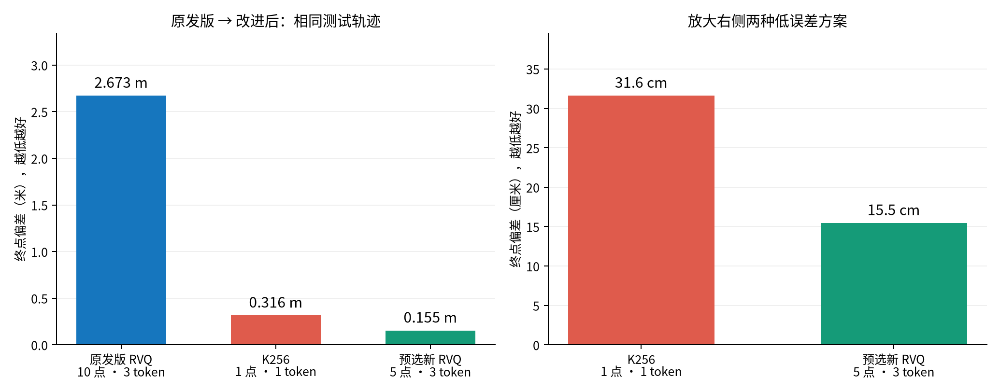
柱越低越好。两图均从 0 起画；左图单位是米，右图放大为厘米。所有值为同一批测试轨迹的均值。
看稳健性与成本：95%分位、转角误差、token 数
95%分位表示 95% 的轨迹终点偏差不超过该值。新 RVQ−K256 的配对均值差 95% 场景重采样区间为 [-18.4, -13.9] cm。token 数只计运动，Pointing 的 Object / Affordance 另占 2 个 token。
结论范围：这页是 GT 轨迹量化后的离线重建，尚未验证视觉策略或闭环导航。新 RVQ 使用 64 / 12 / 24 个互斥训练 / 验证 / 测试场景；K256 曾在全保留集拟合，且每步只用 1 个动作 token，两者训练数据和信息预算不同。
实验怎么做 · 约 45 秒
把真实动作压缩，再解压，看看误差会积累多少
1. 取相同 GTGT 就是真实轨迹；每帧间隔 0.5 秒。
2. 编码 → 解码同一段真实未来运动，分别变成 K256 或 RVQ token，再还原。
3. 累计执行从同一真实起点出发，把每步还原动作接到上一重建位姿。
4. 比较偏差整轨只在开始对齐一次，中途不拉回 GT。
比较 3,760 条轨迹 / 24 个测试场景，平均每条 GT 走 9.20 米；每种编码都使用相同的 162,502 个动作。60 个变体在测试前已冻结，推荐方案由验证集选出。
新 5 点方案每 0.5 秒编码一窗未来路点，只执行首点，再从下一帧生成新的重叠窗口。token 可理解为选中的码本编号。
整轨终点偏差一路累计后，最后离真实终点多远？用它判断长期漂移。
局部 ADE当前帧内，各未来路点离 GT 的距离取平均。用它判断前瞻形状，尚未累计整轨误差。
每步转角误差一个 0.5 秒动作的转角与真实转角相差几度？小误差反复出现也会造成漂移。
RVQ 是每 10 点编码一次，还是每帧都编码？
每一帧都生成重叠的未来窗口。三个 RVQ token 是三层码字叠加，共同还原一整窗路点；每个 token 都参与所有点的重建。
原发版：把未来源轨迹按每段位移 ≤0.25 m、转角 ≤30°细分，取前 10 点；路点间隔不固定。评测通过已保存的 GT 时间戳找到 0.5 秒执行点。
新 5 点方案：路点固定在未来 0.5、1、1.5、2、2.5 秒；当前帧执行第 1 点。0.5 秒后，下一帧再编码一窗，窗口向前滑动一个源帧。
当前帧
起点+0.5 秒
第 1 点 · 执行+1.0 秒
第 2 点+1.5 秒
第 3 点+2.0 秒
第 4 点+2.5 秒
第 5 点
这个实验里，每帧的编码目标都来自 GT，尚未让视觉模型预测这些 token。轨迹尾部不足一窗时只统计有效点。
关键实验 1 · 约 45 秒
同样 3 个 token、固定时间取点：本组 5 点比 10 点更准
改了什么：只改变编码路点数，并为每种长度重训码本。统一用 3 个动作 token、固定 0.5 秒间隔、差分位姿表示、相同训练锚点与编码损失。本组 10 点使用新固定时间码本，原发版的空间细分 10 点另列在首页。
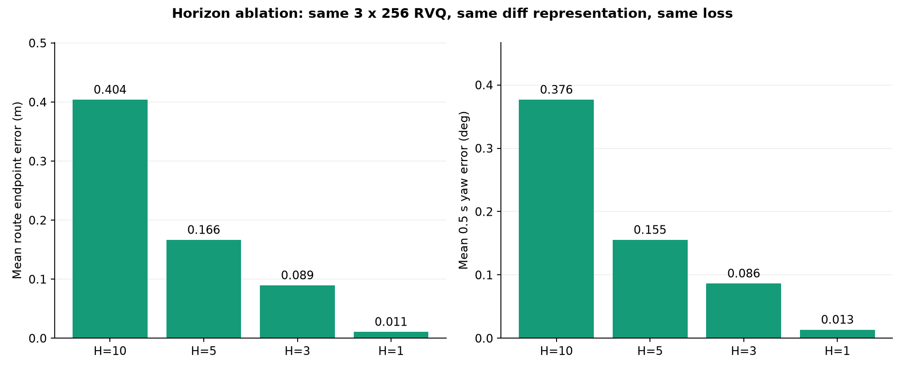
10 点→5 点：整轨终点偏差从 40.4 cm 降到 16.6 cm。此处是控制变量的差分方案；首页预选方案另采用局部绝对位姿，结果为 15.5 cm。
同样 3 个 token，表示更短的未来窗口，可以提高每点精度。1 点最准确，但只保留 0.5 秒前瞻；本次保留 5 点作为精度与前瞻范围的折中。
局部窗口平均走多远：原发版空间 10 点为 1.327 m；新固定时间 10 点为 2.058 m；预选新 5 点为 1.063 m。
局部 10 路点 ADE 的平均距离，具体怎么算？
路程按“当前帧→第 1 点→第 2 点→后续有效点”的相邻水平段累加，含首段、忽略终点填充，再对 162,502 个窗口平均。原地转向也在分母中。它是沿轨迹走过的距离，不是起终点直线距离。
表中自身窗口的范围不同；要公平比较新 H10 与新 H5 的局部位置精度，请看上表同时间前 5 点的 ADE。
同图看轨迹 · 约 60 秒
RVQ 更好、接近、K256 更好：三类都展示
这里的 RVQ 是预选新 5 点方案。原发版 10 点 RVQ 案例看这里。下面是全部测试轨迹的分类占比；分类只比较终点偏差，卡片另给途中平均偏差。
RVQ 占优 60.9%接近 25.4%K256 占优 13.7%
“占优”要求终点偏差至少少 5 cm；其余归为接近。这是展示分组阈值，不是显著性门槛。每组展示 2 条，并不按组的总体比例配图。
看图方法：黑色＝GT 真实轨迹，红色＝K256，绿色＝新 RVQ。先看最终图里谁更贴近黑线，再点“播放轨迹动图”观察偏差怎样累积；箭头表示当前朝向。点击“看最终轨迹”可随时停止播放。
5 点 RVQ 占优 · 2,289 条 / 60.9%
绿色方案的终点偏差比红色至少少 5 cm。 以下先看一条，再展开另一种路程的例子。
5 点 RVQ 占优
案例 1 · GT 走了 7.2 米
终点偏差
K256 37.3 cm ／ RVQ 19.9 cm
途中平均偏差（整轨 ADE）
K256 21.3 cm ／ RVQ 8.3 cm
怎么看：RVQ 的终点偏差少 17.3 cm；RVQ 的途中平均偏差也更小。
绘制路点数
K256：44 个
RVQ：44 个
GT：44 个
均含起点；每 0.5 秒增加一个执行点。RVQ 每次内部编码的 5 点是重叠前瞻窗。
再看一条 11.4 米的例子
5 点 RVQ 占优
案例 2 · GT 走了 11.4 米
终点偏差
K256 45.4 cm ／ RVQ 13.2 cm
途中平均偏差（整轨 ADE）
K256 16.8 cm ／ RVQ 6.5 cm
怎么看：RVQ 的终点偏差少 32.2 cm；RVQ 的途中平均偏差也更小。
绘制路点数
K256：71 个
RVQ：71 个
GT：71 个
均含起点；每 0.5 秒增加一个执行点。RVQ 每次内部编码的 5 点是重叠前瞻窗。
终点误差接近 · 956 条 / 25.4%
两者终点偏差相差不超过 5 cm，继续比较途中偏差。 以下先看一条，再展开另一种路程的例子。
终点误差接近
案例 3 · GT 走了 7.6 米
终点偏差
K256 9.1 cm ／ RVQ 8.3 cm
途中平均偏差（整轨 ADE）
K256 6.1 cm ／ RVQ 5.9 cm
怎么看：两者终点偏差相差不到 5 cm；途中平均偏差以 RVQ 更小。
绘制路点数
K256：36 个
RVQ：36 个
GT：36 个
均含起点；每 0.5 秒增加一个执行点。RVQ 每次内部编码的 5 点是重叠前瞻窗。
再看一条 11.4 米的例子
终点误差接近
案例 4 · GT 走了 11.4 米
终点偏差
K256 14.0 cm ／ RVQ 14.0 cm
途中平均偏差（整轨 ADE）
K256 6.8 cm ／ RVQ 8.5 cm
怎么看：两者终点偏差相差不到 5 cm；途中平均偏差以 K256 更小。
绘制路点数
K256：56 个
RVQ：56 个
GT：56 个
均含起点；每 0.5 秒增加一个执行点。RVQ 每次内部编码的 5 点是重叠前瞻窗。
K256 占优 · 515 条 / 13.7%
红色方案的终点偏差比绿色至少少 5 cm，改进后的 RVQ 仍有失败案例。 以下先看一条，再展开另一种路程的例子。
K256 占优
案例 5 · GT 走了 5.0 米
终点偏差
K256 2.6 cm ／ RVQ 12.7 cm
途中平均偏差（整轨 ADE）
K256 2.0 cm ／ RVQ 7.0 cm
怎么看：K256 的终点偏差少 10.2 cm；K256 的途中平均偏差也更小。
绘制路点数
K256：31 个
RVQ：31 个
GT：31 个
均含起点；每 0.5 秒增加一个执行点。RVQ 每次内部编码的 5 点是重叠前瞻窗。
再看一条 15.1 米的例子
K256 占优
案例 6 · GT 走了 15.1 米
终点偏差
K256 32.7 cm ／ RVQ 46.4 cm
途中平均偏差（整轨 ADE）
K256 18.5 cm ／ RVQ 21.4 cm
怎么看：K256 的终点偏差少 13.7 cm；K256 的途中平均偏差也更小。
绘制路点数
K256：56 个
RVQ：56 个
GT：56 个
均含起点；每 0.5 秒增加一个执行点。RVQ 每次内部编码的 5 点是重叠前瞻窗。
如何选例、如何计点、坐标是否一致？
固定保留先前选出的 6 条案例：每组在 GT 路程 5–10 m 与 10–25 m 各选 1 条，限制少于 140 帧，优先终点差接近候选中位数且来自不同场景。没有为本次视觉改版重选胜例。
每张图的三条路径共同平移、旋转，使共同起点朝向朝上；相同尺度、距离和误差保持不变。网格与右上角比例尺都以米计，不代表墙或 NavMesh。灰线是完整 GT，空心圆是 GT 终点，终态虚线连接 GT 与重建终点。
最终路径保留全部路点，含共同起点；每个 0.5 秒动作增加 1 点，STOP 不增加点。RVQ 每帧的 5 个局部前瞻点彼此重叠，动图画的是逐次执行首点得到的世界轨迹。播放最多抽取 75 帧，最终图保留全部点。
完整实验与证据 · 按需展开
上述速读给出结论。这里保留全部 60 变体、16 份码本、失败实验、审计与复现材料。默认折叠以方便阅读。
完整指标主表：预算、前瞻与更多候选
按验证集事先选定的 5 点、3 token 方案，在新测试集的整轨终点误差均值为 0.1547 m，相比原发版 RVQ 的 2.6731 m 降低 94.2%，相比同批 K256 的 0.3163 m 降低 51.1%。RVQ−K256 的配对均值差 95% 场景 bootstrap 区间为 [-0.1844, -0.1388] m。
该方案使用固定 0.5 秒时间网格、5 个未来局部 SE(2) 位姿、三层各 256 项的 RVQ。码本在训练场景上拟合；编码时同时优化整个有效窗口的位置、各点方向与本次执行点方向。窗口 ADE 为 0.0179 m，P95 为 0.0432 m，保留未来几何信息。预算是每次 3 个动作 token，K256 为 1 个；两者提供的信息量不同。优选来自验证集，测试集打开前已冻结所有变体与码本哈希。
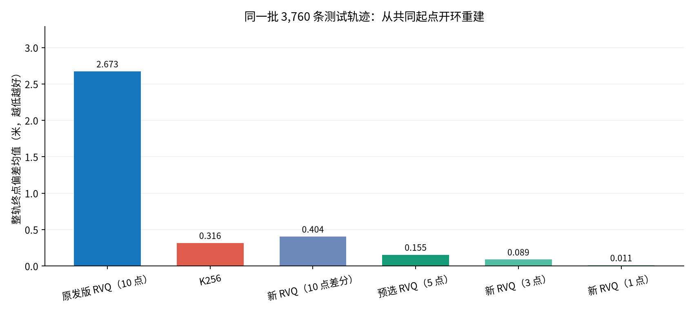
相同的 3,760 条测试轨迹；所有终点误差均从共同 GT 起点开环积分。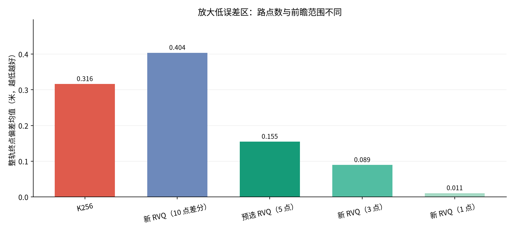
放大低误差区间。1 点方案只保留下一步，不能据此宣称 5 点或 10 点未来预测同样精确。不同 H 的“自身窗口 ADE”覆盖范围不同；比较 5 点与 10 点时，下方另给相同前 5 点 ADE。表中 token 数只计算动作；Pointing 的 Object / Affordance 仍另占 2 个 token。
另一候选：额外约束首点位置及三个随机种子
new_h5_control_weighted 在 H5 差分损失中额外加入首点位置误差，仍保留整个窗口 ADE。其验证集终点均值为 0.2476 m，测试为 0.1416 m，局部窗口 ADE 为 0.0179 m；三个种子的测试结果为 0.1416、0.1423、0.1358 m。这是一种保留前瞻且开环误差小的候选用法。
它在验证集上的排序略落后于绝对坐标 H5，因此保留测试前冻结的优选标记。报告同时展示其更低的测试观察值，供后续在实际任务验证集上比较；没有根据本次测试排名重新挑选种子或更新码本。
数据与实现审计：源身份、坐标、时间、填充、解码复现
- 每条轨迹核对源视频身份、帧数、GT 位姿、2 Hz 时间轴和 K256 STOP 约定；每个 batch 校验原标注 SHA 收据。只读几何，RGB 读取为 0。
- 测试保留全部非终止动作，没有按旧 RVQ 的 training_eligible 标签或量化误差筛选。所有变体使用相同的轨迹和动作。
- 原发版编码使用当前帧 GT 起点的重叠未来窗；3 个码字求和后解码，不是每个 token 各编码一段轨迹。原几何细分窗以距离≤0.25 m、转角≤30°取前 10 点，0.5 秒执行点的索引会随细分数变化。
- 新固定时间方案的第一个路点始终对应下一源帧，既不需要 GT 侧车时间戳，也不把不足 H 点的尾部填充纳入编码损失和指标。0.25 秒变体只插值原 2 Hz GT，没有增加真实观测。
- 无量化 GT 增量重建在测试集的最大终点误差为 4.57e-14 m。发版编码器在完整验证集重编码 token 一致率为 100.00%；优选方案的独立 NumPy 解码器验证 275,988 个窗口，位置最大差 4.77e-07 m。
编码目标由各帧 GT 未来窗口生成，回放时将解码动作应用在当前已重建位姿上，整轨仅在初始位姿对齐。整轨指标对轨迹等权；单步指标对动作等权，局部 ADE 先在有效点内取均值，再对窗口等权。5 秒与 10 秒实验分别每 10、20 个动作从 GT 起点重置，段内仍开环积分。
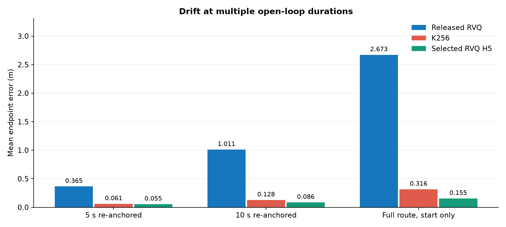
不同开环时长均比较同一批可用段。完整段数和分位数记录在机器可读结果中。
测试集重编码有 1 / 162,502 个近似并列窗口选择了不同 token，损失差仅 2.24e-08，导致整轨终点均值差 1.06e-06 m。原发版 baseline 始终使用保存的原 token，未以重编码替代。
本研究衡量 GT 轨迹经过量化后的重建误差。没有运行视觉策略、碰撞检测、机器人动力学或反馈控制，因此这些数字用于选择编码方案，不是导航成功率。原 K256 码本曾使用全保留集拟合，本次新测试场景对它不构成严格训练隔离；新增 RVQ 码本则只接触 64 个训练场景。表中的 new_h1_1token 提供了同训练样本的单层 VQ 对照。
角度消融细节：训练尺度、表示方法、转向分层
角度权重从 0.3、1 到 3 m/rad 分别训练；每份码本同时比较“特征空间贪心残差分配”和“解码后几何损失 + 执行点方向”的搜索。增加角度权重会改变平移与方向的容量分配；结果并非权重越大就所有指标越好。
RVQ 的核心是 ẑ = C₀[k₀] + C₁[k₁] + C₂[k₂]：先拟合第一层码本，再对第一层留下的残差拟合第二层，再拟合第三层残差。本研究用 residual k-means、每层 256 项、k-means++ 初始化与两次重启训练；改变的是特征表示、尺度和编码分配目标，三个 token 并不各自对应一段独立轨迹。
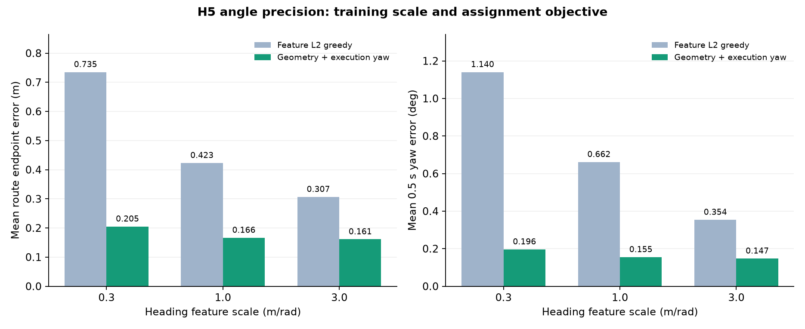
同一 H5 码本内对照分配目标，横向比较角度训练尺度。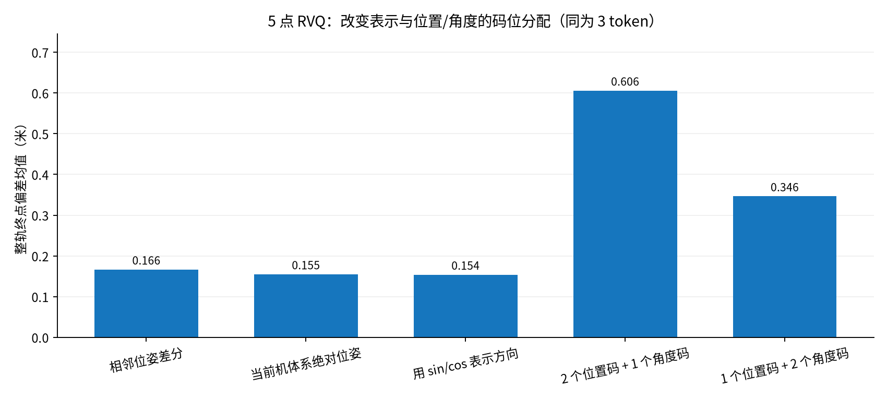
sin/cos 避免角度坐标的 ±π 跳变；本批数据中它没有明显超过绝对角度表示。分开分配码位也没有自动获得最好结果。优选方案将 [x₁,y₁,θ₁,…,x₅,y₅,θ₅] 联合 RVQ 编码，解码输出为当前机体坐标下的绝对局部位姿。编码分配损失为 ADE_valid + 0.3 × mean|wrap(角度误差)| + 1.0 × |wrap(首点角度误差)|；角度以 rad 计。该目标保留整个窗口位置精度，同时直接约束每 0.5 秒执行的方向。
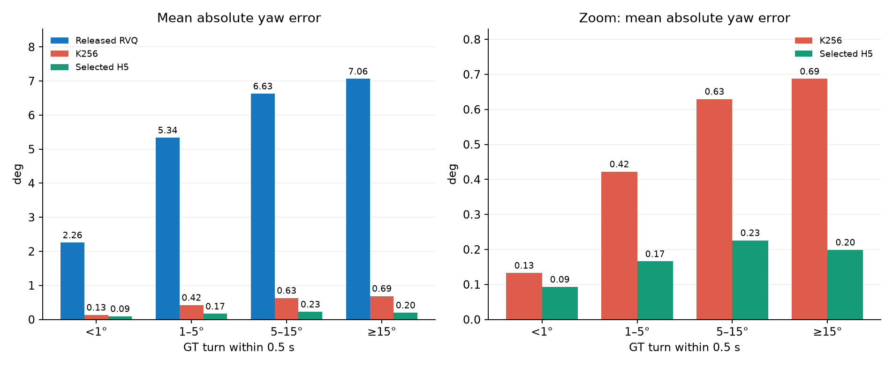
在相同 GT 转向组内比较，右图放大 K256 与优选方案，避免大误差柱掩盖细节。
对 21,016 个原地转向动作（水平移动小于 2 cm、转角至少 5°），原 RVQ 的平均方向误差为 7.833°，K256 为 0.548°，优选 H5 为 0.153°，其 P95 为 0.447°。这些动作几乎没有 XY 位移，直接用轨迹切线替代显式角度会丢失转向信息。
另有“4 个联合残差 token”和“原 RVQ + 8 bit 角度修正 token”实验，全部显式计为 4 个动作 token。后者只修正被执行点的方向，没有凭空增加整个未来窗口的精度；完整表中保留它的误差、角度饱和数和额外成本。
选码搜索与穷举：保留原码本能改善多少
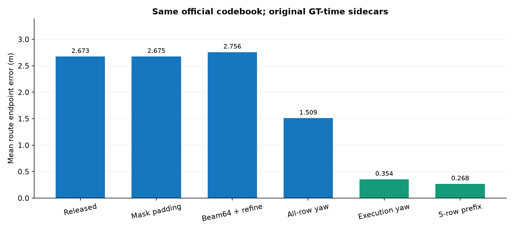
这组使用原几何采样和 GT 侧车时间戳，只用于隔离编码分配目标。它们不能直接当作固定时间部署方案。
原目标主要看窗口位置与末点方向。宽度 64 搜索和逐层细化更充分地优化该目标，却没有解决逐帧开环漂移；加入执行点方向、或优化前 5 点，改善更明显。对固定时间网格，直接复用原码本仍可能因运动范围和采样分布不同而出现较大位置误差，见 official_fixed05*。因此需要同时检查目标、采样与码本分布。
额外对 64 个验证窗口做完整三层组合穷举，以区分 RVQ 容量和近似搜索误差。搜索访问每个允许的组合；下表的“最优”只指该窗口的给定损失，容差为 10⁻⁵。
损失含位置与加权角度，不能把损失差直接解释为纯位置误差。该小样本核查没有证明整个测试集或整条轨迹的全局最优。
执行频率完整对照：误差、请求数与实际时长
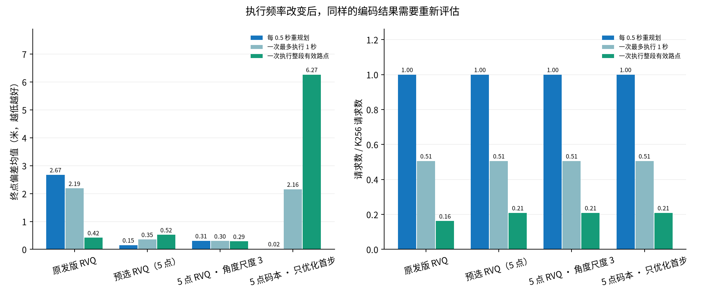
三种执行方式使用相同发版/重编码 token，按共同 2 Hz 网格回放。整段的实际时长由有效路点决定。
为首点精度优化的编码，后续方向未必同样准确；降低请求数时必须重新检查整轨漂移。只优化下一步的 H5，其逐帧结果为 0.0200 m，但自身窗口 ADE 为 0.2397 m，直接整段执行的误差为 6.265 m。它适合研究单步控制的精度上限，不能以“5 点”名称替代未来轨迹质量检查。完整执行结果同时记录速度 jerk、方向角加速度和请求数。
残差层与随机种子
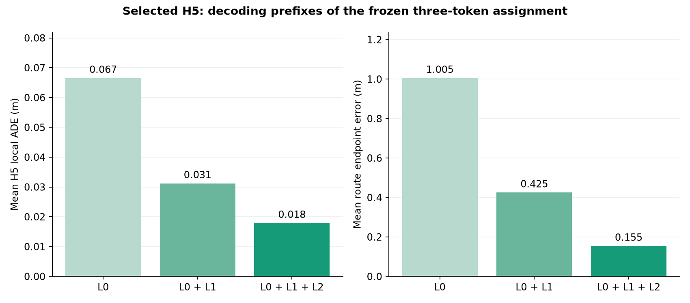
截取同一组三 token 分配的前缀，展示残差层作用；没有为短前缀重新选择最优 token。
对 H5 差分基线使用相同训练锚点、三个不同 k-means 随机种子，测试终点误差均值分别为 0.1664, 0.1634, 0.1678 m，均值 0.1659 m、样本标准差 0.0022 m。三者实际都使用前三层；首个文件另存的第 4 层是后续追加训练，不会回写前三层，仅供 4 token 变体使用。控制加权版本也保留三个种子结果。绝对坐标优选码本是预先冻结的单个模型；场景 bootstrap 区间描述这份模型的数据抽样不确定性，不代表全部训练随机性。
全部 60 个编码变体（可筛选）
每个变体都完成了相同的 1,992 条验证轨迹和 3,760 条测试轨迹。表格展示逐帧执行结果，保留未改善、增加 token、依赖 GT 时间侧车以及牺牲前瞻精度的实验。测试结果没有用于重新选择或训练码本。
各系列含不同信息预算与时间约定。不同 H 的窗口 ADE 不等覆盖范围；新增 token 方案不作为同预算胜例。完整置信区间、转向分层、首5点同时间 ADE、方向残差相关性、码本哈希和执行结果见 research-summary.json。
下载、使用约定与复现步骤
保留 5 点未来信息时，优先采用本次验证集选出的固定 0.5 秒 H5、3 层 RVQ 与执行点方向损失，并逐帧执行首点。若只需要下一动作，可选 H1 的 2 或 3 层 RVQ，明确接受前瞻范围的缩短。延长整段执行时间时，应独立选择与验证对应的码本和目标。
码本与策略必须成套：新码本索引的意义已经改变，需要重新标注并训练/微调动作策略；把新码本直接替换进原 LightNav 检查点无法复现本研究结果。新研究码本的 256 个索引都用于运动编码，没有保留 L0=6 为 STOP，终止应由显式 stop 标志或 Affordance STOP token 决定。这里交付的是通过离线重建验证的量化器和 NumPy 解码器。
下载优选 H5 码本 · NumPy 解码器 · 时间、坐标与终止约定 · 全部代码与 16 份码本 · 研究协议 · 测试前冻结记录 · 穷举核查
复现顺序与数据边界
在具有同源发版数据的环境中运行：prepare.py 验证并创建几何缓存；experiment.py define 固定变体；run_queue.py train 训练；run_queue.py validation 评估验证集；freeze.py 固定选择及哈希；run_queue.py test 运行测试；execution.py --all 比较执行方式；exact_probe.py 核查近似搜索；collect.py 与 make_report.py 汇总。训练样本最多每场景 2,048 个完整 5 秒锚点；60 个历史展示场景全部排除。私有视频路径和 episode ID 未发布，公开拆分哈希用于核对研究来源。
每场景只取一个确定性 batch，因此是场景覆盖样本。区间按场景重采样 2,000 次并保留轨迹数权重，不能将同场景相邻帧当成独立样本；完整变体表属于探索性对照，没有对全部同时比较作多重检验校正。当前成果未覆盖视觉策略学习难度、闭环成功率、碰撞或机器人控制。
方法来源：LightNav-0 的残差轨迹量化目标 · 官方首点执行与时间说明 · Residual Quantization 原论文 · RQ-VAE 作者实现。本研究的新码本、特征和损失是自己的消融方案。